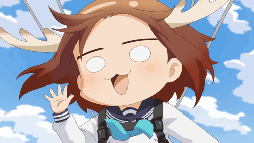
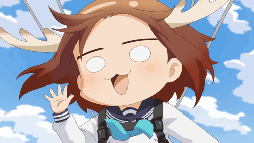
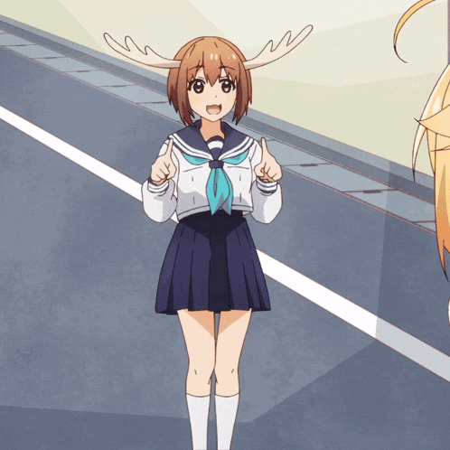
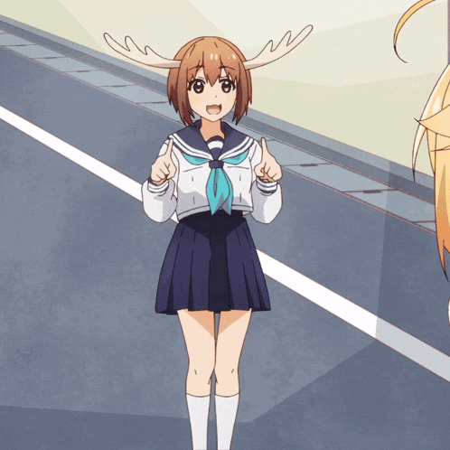

Somos una pagina creada por amigos como prueba de habilidades en temas de html y css
El ciervo es un mamifero Un ciervo es un animal mamífero que forma parte del conjunto de los rumiantes. Suele tener una altura de unos 1,30 metros y puede pesar hasta 200 kilogramos, aunque sus características varían de acuerdo a cada subespecie. Es posible encontrar ciervos en varias partes del mundo, entre las que destacan el continente europeo, el americano, el asiático y el africano. Por otro lado, también tienen hábitats en ciertas zonas árticas. A Australia y Nueva Zelanda, en cambio, llegó de forma artificial, llevado por el ser humano.

El ciervo se encuentra en todo el mundo, excepto en Australia y la Antártida. Mientras que en otros continentes hay una gran variedad de ciervos, en África sólo hay uno, el ciervo de Berbería o del Atlas (Cervus elaphus barbarus). El pudú del sur (Pudu puda) es originario de Chile y Argentina. El venado de cola blanca es común en América del Norte y del Sur.
Los ciervos son muy sociables y viajan en grupos llamados rebaños. El rebaño suele estar dirigido por un macho dominante, aunque en algunas especies los rebaños están segregados por sexo. A veces las hembras tendrán su propio rebaño y los machos tendrán un rebaño separado. En otros casos, una manada de hembras es vigilada por una manada de machos. Algunos rebaños de caribúes pueden tener hasta 100.000 miembros.
Mayoría de los ciervos son activos durante todo el día, aunque sus momentos más activos son durante el amanecer y el atardecer. Pasan sus días buscando comida.
Los ciervos son herbívoros; sólo comen vegetación. En su mayor parte, la dieta de los ciervos consiste en pasto, arbustos pequeños y hojas, aunque se forrajean en los cubos de basura y en los jardines si no pueden encontrar la vegetación que necesitan en otro lugar. Los ciervos tienen un estómago principal y tres «estómagos falsos». Como las vacas, mastican su bolo para digerir completamente su comida.

Los ciervos tienen muchos depredadores o enemigos naturales. Los animales a los que les gusta matar y comer ciervos son los cánidos salvajes, o animales parecidos a los perros, como los lobos y los coyotes. Los gatos grandes como pumas, jaguares y linces también cazan ciervos. Los osos matan y comen ciervos y, en los bosques tropicales y subtropicales, las grandes serpientes, como las anacondas, y los cocodrilos, como los caimanes atacan a los ciervos para poder comer. Debido a que tienen tantos enemigos, los ciervos han desarrollado una buena audición, una buena vista y la capacidad de correr muy rápido. Se necesita un depredador hábil para atrapar un ciervo.
Aunque no es común, algunos ciervos son monógamos, como el corzo europeo. Cuando un ciervo se reproduce depende del lugar donde vive. Los ciervos de las zonas templadas se reproducen a finales de otoño o principios de invierno. Los ciervos que viven en latitudes más bajas se reproducen desde finales de la primavera hasta principios del verano. Los ciervos que viven en climas tropicales se aparean cuando lo desean, lo que puede ocurrir varias veces al año. Los ciervos llevan a sus crías durante un período de gestación de 180 a 240 días. Para el venado de cola blanca del norte y del sur, la gestación dura entre 193 y 205 días. Por lo general, cuanto más grande es el ciervo, más tiempo lo lleva la madre en su vientre. Los ciervos suelen tener de una a tres crías a la vez y a estas crías se les llama cervatillos. Algunos de los grandes ciervos bebés también son llamados terneros.

 
